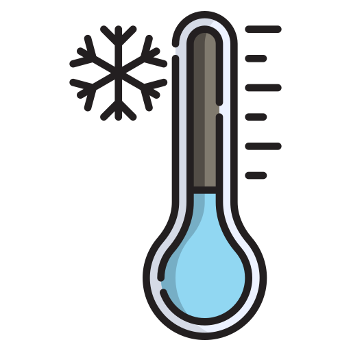

2014-yil 16-aprel kuni Janubiy Koreyaning Sewol kemasi Inchxondan Chedju oroliga yo‘l olganida Jindo oroli yaqinida halokatga uchradi. Kema bortida 476 kishi bo‘lib, ularning 325 nafari o‘quvchilar edi. SOS signali mahalliy vaqt bilan 09:00 da yuborilgan, biroq qutqaruv ishlari kechikib, 304 kishi halok bo‘ldi.
Halokat sabablari:
Geografiya:
Sewol kemasi Janubiy Koreyaning Jindo oroli yaqinida cho‘kib ketgan. Bu hudud dengiz oqimlari va suv osti relyefi jihatidan murakkab hisoblanadi. Oqimlarning kuchli harakati kemaning muvozanatini yanada beqarorlashtirgan bo‘lishi mumkin. Bundan tashqari, dengiz tubining notekisligi va ba’zi joylarda chuqur bo‘lishi qutqaruv ishlarini ham qiyinlashtirdi.
Biologiya:
Falokat paytida suv harorati past bo‘lgani sababli (taxminan 12-14°C), tirik qolgan yo‘lovchilar sovuqdan muzlab qolish xavfiga duch keldi. Tana past haroratga tushishi (gipotermiya) natijasida odamlar qisqa vaqt ichida hushidan ketishi yoki harakatsiz qolishi mumkin edi. Bu esa ularning qutqaruvga yetib borish imkoniyatini kamaytirgan.

Fizika:
Kemada 987 tonna yuk bo‘lishi kerak edi, lekin halokat vaqtida 2,142 tonna yuk bor edi, ya’ni ikki baravar ortiq.
Kemaga yuk ortiqcha yuklangan va noto‘g‘ri joylashtirilganligi sababli, kemaning barqarorlik markazi ko‘tarilib ketgan. Bu fizikaning muvozanat va og‘irlik markazi tamoyiliga zid bo‘lib, kema harakatlanganda og‘irlik markazi noturg‘unlashib, kemaning yon tomonga og‘ishiga sabab bo‘ldi. Shuningdek, keskin burilish markazdan qochma kuchni oshirgan va yuk siljib ketib, kema muvozanatini butunlay yo‘qotgan.
Kimyo:
Dengiz suvida erigan kislorod miqdori halokatning ta’sirini oshirdi. Kema cho‘kish jarayonida suv ichiga havo kirgan bo‘lishi mumkin, bu esa korroziya jarayonini tezlashtirib, ba’zi qismlarning mustahkamligini zaiflashtirgan. Bundan tashqari, kemada yoqilg‘i va boshqa kimyoviy moddalar bo‘lgan bo‘lishi mumkin, ular suv bilan reaksiyaga kirishib, atrof-muhitga zarar yetkazgan.
Jinoyat va jazo
Sewol halokati Janubiy Koreya jamiyatida katta g‘azab uyg‘otdi. Kapitan Lee Joon-seok va ekipaj a’zolari o‘z jonini saqlash uchun kemadan birinchi bo‘lib qochgan, yo‘lovchilarga esa "joyingizda qoling" buyurilgan. Natijada, aksariyat o‘quvchilar kemada qolib halok bo‘ldi.
Sud jarayonida kapitan qatliomga sabab bo‘lish aybi bilan umrbod qamoq jazosiga hukm qilindi. Ekipajning boshqa a’zolari esa 5 yildan 30 yilgacha ozodlikdan mahrum qilindi. Shuningdek, paromni boshqaruvchi kompaniya rahbarlari ham hibsga olindi va yirik jarimalar belgilandi.